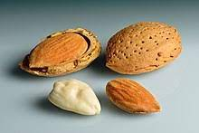

Ametlla, Amygdalus communis / Rosaceae
L'ametlla procedeix de l'arbre que pertany a la família de les Rosáceas i espècie Prunus communis o P. amigdalus que comunament es coneix com a ametller. Pot aconseguir fins a 5m d'altura, encara que no sol ser de port molt vigorós. És un arbre caducifoli les fulles del qual són alternes, de limb serrat, estret i allargat. Les flors fan que sigui molt ornamental i l'època de floració depèn de la varietat; no obstant això des de mitjan gener comencen a veure's ametllers en flor. És el primer arbre de fruits comestibles a florir a Espanya.
El cultiu de l'ametlla és originari de les zones càlides i gairebé desèrtiques d'Àsia Central. Després va passar a Europa, concretament a Grècia i Roma. Els romans la van difondre per la resta d'Europa i d'aquí va arribar fins a Amèrica. Veure la producció mundial
Són moltes les varietats conreades, no obstant això, les ametlles dolces poden classificar-se en dos grups, les de pela tova trucades ‘mollars’ i les de pela dura. Les ametlles amargues, utilitzades en la indústria, tenen un aspecte extern similar a les dolces però no són comestibles.
Les ametlles de l'ametller dolç són les que normalment es consumeixen com a fruita seca, fregit i/o salat. S'utilitzen com a ingredient per a l'elaboració de dolços com el torró i el massapà, confits, en pastissos, xocolates, gelats i nombrosos plats i salses. També s'elaboren altres productes derivats de l'ametlla com són farines, cremes, orxata i llet. Les ametlles amargues no es consumeixen com a fruita seca, però d'elles s'obté olis o essències que s'usen com a condiment de molts plats.
El fruit pertany a la mateixa família que la pruna i el préssec amb el qual té certa semblança quan encara es troba en l'arbre. És una drupa oblonga i la llavor de la qual o ametlla és comestible, de sabor dolç i color blanc brillant quan se li lleva la coberta de color marró vermellós que l'embolica.
Per a més informació empleneu el següent qüestionari: